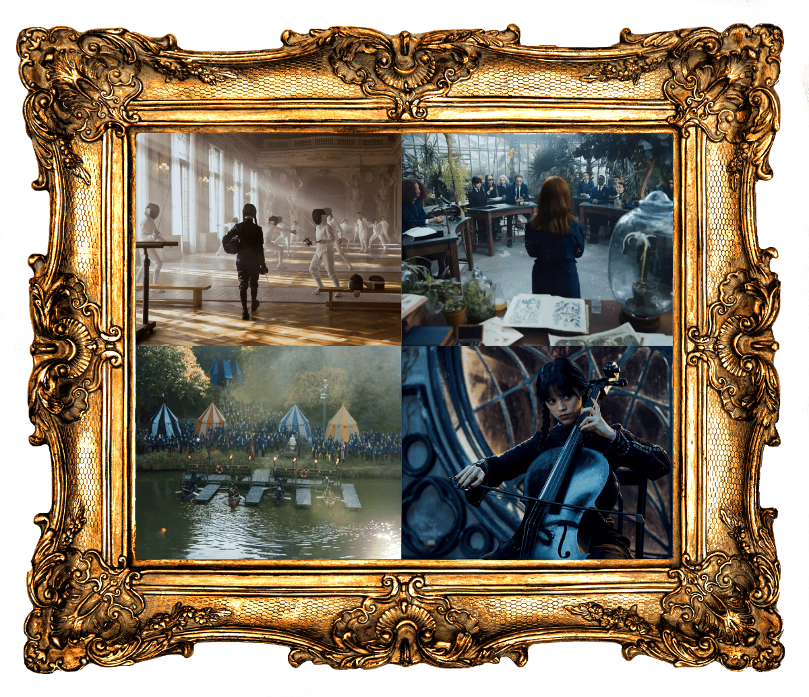

Bild klicken: zu den Kursen
Die Nevermore Academy bietet
alle wichtigen Unterrichtsfächer
An der Nevermore Academy stehen den Studierenden eine Vielzahl von faszinierenden Fächern zur Verfügung! In Flugkünsten werden sie auf Flugschwämmen durch die Lüfte gleiten und atemberaubende Manöver erlernen. In Zaubertrankologie entdecken sie die Geheimnisse der Zutaten und mixen magische Tränke. In Sprechende Tierwesen lernen sie, mit Katzen, Eulen und anderen Kreaturen zu kommunizieren. Kaffeepausen-Zauberei ist ein Muss für humorvolle Zauberduelle und köstliche Keksverzauberungen. Und in Magischer Verteidigung werden sie lernen, ihre Kräfte zu kontrollieren und sich vor Gefahren zu schützen. Ein abwechslungsreicher Lehrplan für angehende Hexen und Zauberer!